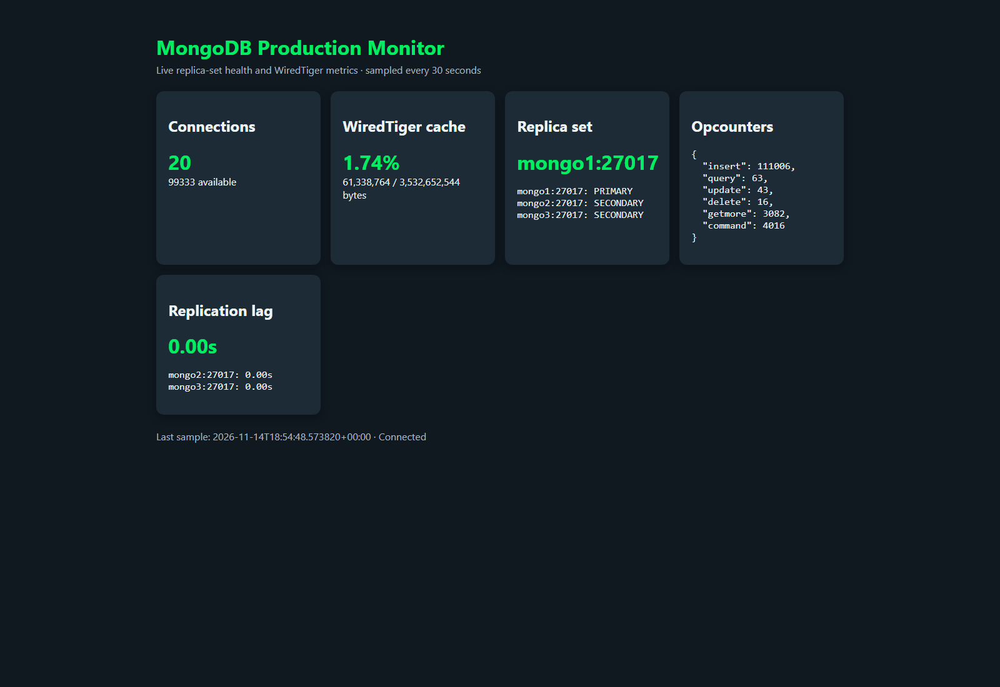
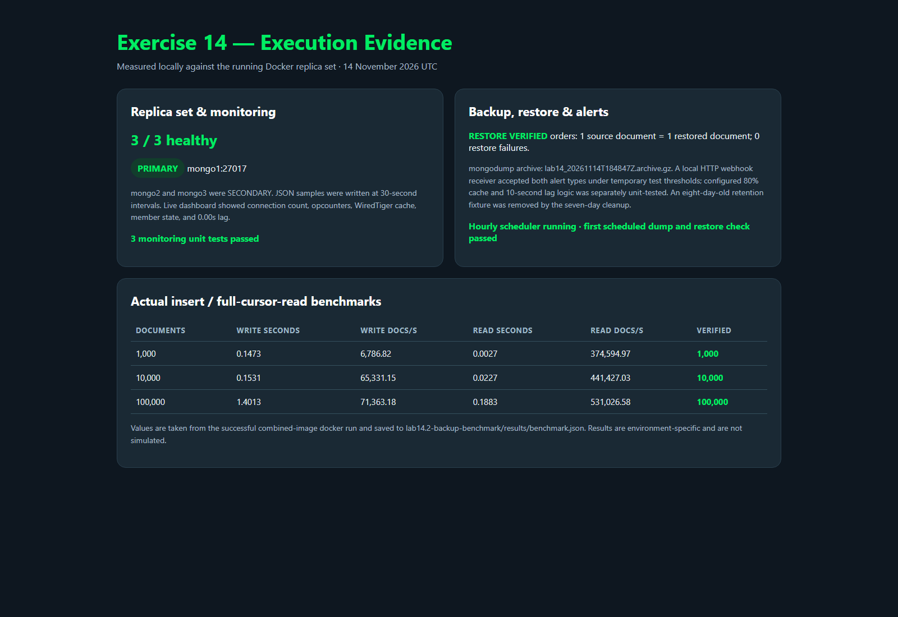

Lab 14.1: Python MongoDB Monitoring Dashboard
Lab 14.2: Automated Backup, Restore Verification, and Performance Benchmarks
Name: G RAJA SIMHA REDDY
USN: 24BTRCL070
Docker Hub URL: https://hub.docker.com/r/raja6303/mongodb-exercise14
Docker image: raja6303/mongodb-exercise14:1.0.0
Pull image: docker pull raja6303/mongodb-exercise14:1.0.0
docker compose -f lab14.1-docker/docker-compose.yml up -d
docker run --rm --network lab141-docker_mongo-net --env-file lab14.1-docker/.env -p 127.0.0.1:8081:8080 raja6303/mongodb-exercise14:1.0.0 dashboard
Open http://localhost:8081
docker run --rm --network lab141-docker_mongo-net --env-file lab14.1-docker/.env -e BACKUP_DIR=/backups -v "${PWD}/lab14.2-backup-benchmark/backups:/backups" raja6303/mongodb-exercise14:1.0.0 backup
docker run --rm --network lab141-docker_mongo-net --env-file lab14.1-docker/.env -e BENCHMARK_RESULTS_PATH=/results/benchmark.json -v "${PWD}/lab14.2-backup-benchmark/results:/results" raja6303/mongodb-exercise14:1.0.0 benchmark --counts 1000 10000 100000

